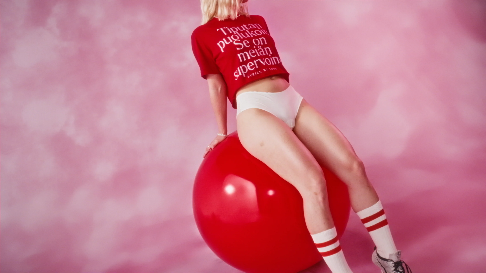
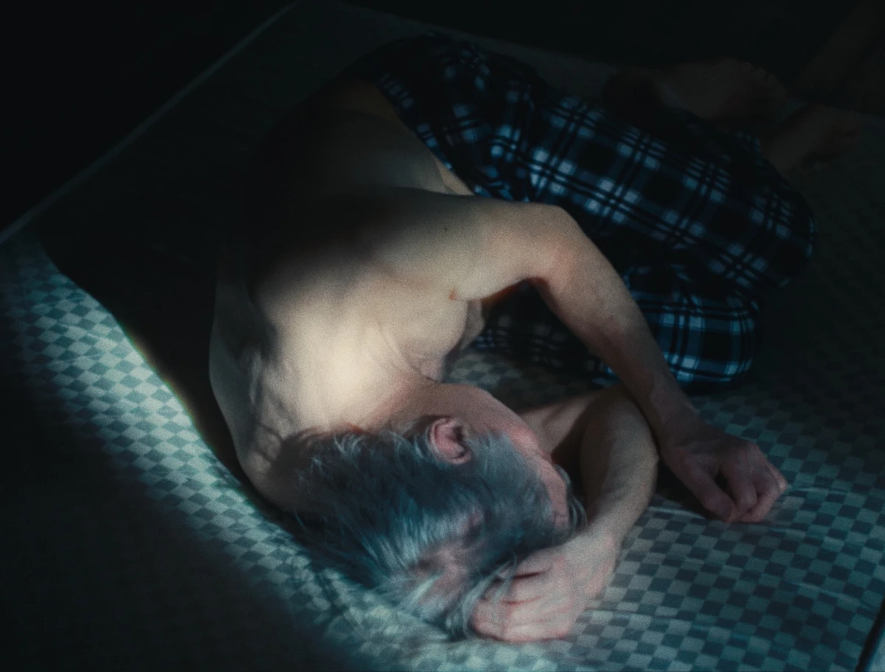
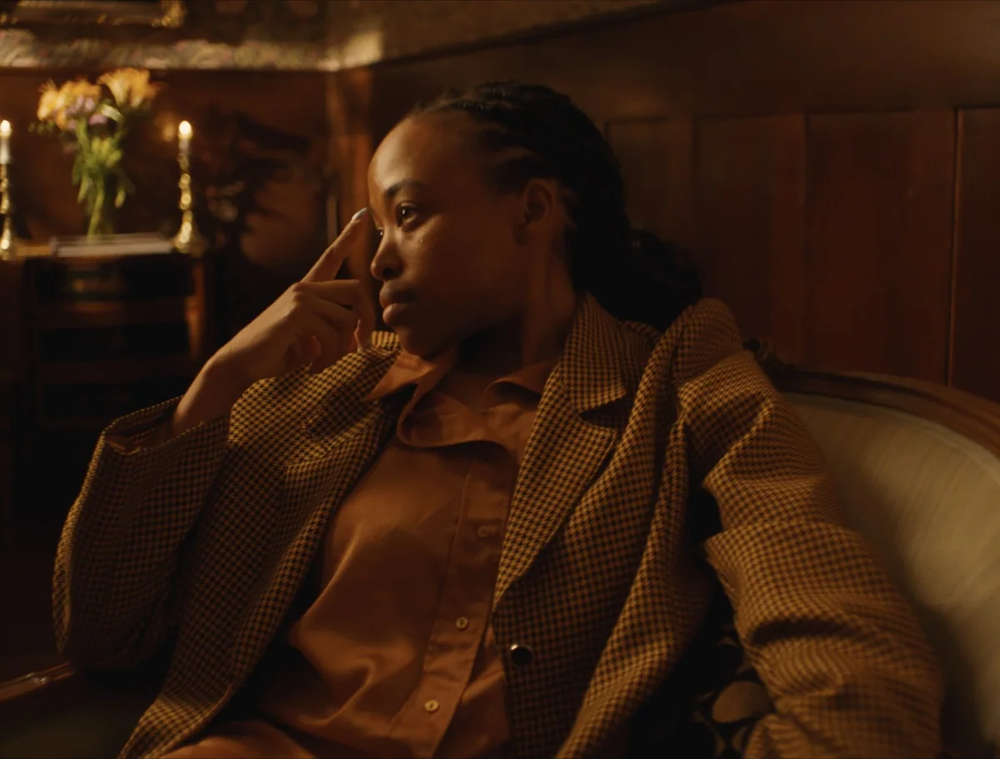

PLANT BASED · Vuokkoset
Directed by VIIVI HUUSKA
Commercial
THE INVITATION · Ikea
Directed by NIKOLAJ FREMMING
Brand Film
THE JOURNEY · Ikea
Directed by NIKOLAJ FREMMING
Brand Film

BETTER THAN BEFORE · Oli
Directed by HEINI SUSANNE
Music Video
CHROMATIC WINTER · Milly
Directed by JESSICA WALSH
Commercial
AINO · Novita
Directed by EMILIA HERNESNIEMI
Brand Film

DRIVING FORCES · Desire
Directed by HEINI SUSANNE
Narrative

DRIVING FORCES · Longing
Directed by HEINI SUSANNE
Narrative

DRIVING FORCES · Ego
Directed by HEINI SUSANNE
Narrative